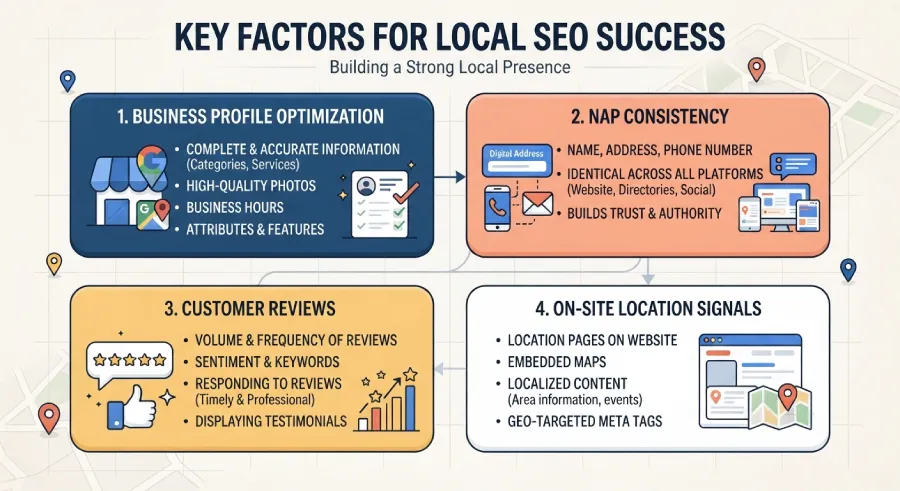

There was a time when finding a professional meant asking a friend, checking a directory, or scrolling through pages of search results that had almost nothing to do with where you actually lived. That time is mostly gone. Today, a huge share of searches for a lawyer, a trainer, a real estate agent, or a place to stay start with two words: near me.
It sounds like a small phrase. It quietly rewrote the rules for how local professionals get found, and most independent service providers still haven't caught up to what it actually requires.
What Actually Changed
A near me search isn't really about typing the words "near me" anymore. Search engines now infer that intent automatically. Someone typing just "family lawyer" or "personal trainer" on their phone gets local results by default, because the search engine already knows roughly where they're standing. The words changed the expectation even for people who never type them at all.
This shifted the entire competition. It's no longer about ranking well nationally or even citywide. It's about ranking well within a few miles of wherever someone happens to be standing at that exact moment, often while they're already halfway through deciding to reach out to someone.
Why This Matters More for You Than for a National Brand
A large chain with locations everywhere benefits from broad visibility. An independent professional benefits from something much more specific: being the obvious, well-documented, easy-to-trust option within their actual service area. Near me search results reward exactly that kind of specificity, which puts independent professionals on more even footing with much larger competitors, as long as the basics are actually in place.
What Actually Earns a Spot in Those Results
Ranking well for near me searches isn't primarily about your website's design. It's about a set of very specific, very unglamorous details that search engines use to decide who's genuinely local, active, and trustworthy.
A Complete, Verified Business Profile
Your Google Business Profile carries far more weight in local results than most professionals realize. A complete profile with accurate hours, a real address or clearly defined service area, correct categories, and updated information is one of the strongest signals you can control directly.

Consistent Name, Address, and Phone Number
If your business name, address, and phone number appear slightly differently across your website, your business profile, and any directories you're listed in, that inconsistency quietly undermines how confidently search engines associate all of it with the same, real, trustworthy business.
Reviews, and Recent Ones
The number of reviews matters, but recency matters almost as much. A profile with steady, recent reviews signals an active business. A profile with twenty reviews from three years ago and nothing since signals the opposite, even if the twenty reviews were excellent.
Location Signals on Your Own Website
Your city or service area needs to appear clearly and naturally in the quiet, unglamorous parts of your site, the title tag, a heading, your service pages, not buried only in a footer address nobody reads. This is one of the few places where being specific about location directly helps rather than sounding robotic, as long as it's placed where search engines look, not forced into your headlines.
The Part Most Professionals Get Wrong
Many independent professionals treat their website as the whole strategy and their business profile as an afterthought, something they filled out once and never touched again. In near me search, it's often the reverse that matters more. Your business profile is frequently the first thing a nearby searcher actually sees, before they ever click through to your site at all.
The Bottom Line
Near me search didn't just add a new keyword to worry about. It changed who gets found first, rewarding the professionals who are specific, verified, active, and consistent over the ones who simply have the nicest website. Getting the unglamorous details right is, for most local professionals, the highest-leverage SEO work available.
Want to know exactly where your local search presence is falling short?
At Evida Studio, we set up the local SEO foundation, business profile, consistency, and on-site signals, that near me search actually rewards.
Let's Talk About Your Project